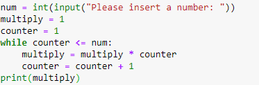

בוקר טוב ושבת שלום,
אז אני ממש מאחור, כבר שלושה ימים תקועה במחברת הראשונה וממש נאבקת בניסיון להבין את התרגילים קולץ בישבן ומפענח הצפנים.
בתחושה שלי אני מפספסת את עניין הלולאות, הנושא כולו לא מתיישב לי…
מאוד אשמח אם תוכלו להעלות תרגול של הנושא כי אני מרגישה קצת אבודה…ולא מצליחה להתקדם.
שוקלת לעבור למחברת 2 ופשוט לדלג על מה שלא הצלחתי):
אשמח לעזור אם תרצי בכך.
בכל מקרה, כמו שנכתב במחברת - לולאת while היא בידיוק כמו if, אך השוני ביניהן שהיא תמשיך לרוץ עד אשר התנאי של הלולאה ימשיך להתקיים, כלומר יהיה True. לכן אנו צריכים לקדם בשבלים כל פעם את התנאי על מנת שבסופו של דבר יהיה False כדי שלא תיווצר לנו לולאה אינסופית.
דוגמה טובה לשימוש בלולאה היא התרגיל של עצרת משבוע 2 - עד שלא הגענו למספר המבוקש, לכפול כל פעם במכפלה של המספרים הקודמים, ובשימוש בפייתון זה יראה כך:

אני מבינה את המהות…
אבל כשמגיעים לתרגילים קצת יותר מורכבים אני לגמרי מסתבכת ולא מצליחה להבין.
לצורך העניין את התרגיל עם העצרת, ואת הפירמידה הצלחתי והבנתי…
ובכל זאת, את השאר לא:\
להבין את המהות זה העיקר.
אז בואי נעזור לך בתרגיל ‘יותר מסובך’, מוזמנת לבחור אחד
היי,
@sharonb12304; יצאת שפיצית ואני מאוד מעריך את ניסיון ההתמודדות לבד.
קיבלתי את הבקשה ואנסה לשחרר היום סרטון בנוגע ללולאות.
לייק 1
אני לא מבינה למה הפונקציה של 1-1000 לא עובדת לי (אין שגיאה, אבל לא מפסיקה לרוץ):
// פתרון צונזר //
מה גורם ללולאה לא לרוץ לנצח? האם את עושה את זה? איפה?
הוספתי return במקרה שגדול מ1000, אשמח להכוונה נוספת כי עדיין לא הצלחתי…
// פתרון צונזר //
תודה!
את אומרת שהפונקציה לא מפסיקה לרוץ, למה בעצם שהיא תפסיק? איך אנחנו גורמים ללולאה להפסיק לרוץ?
ע״י קידום הi במקרה הזה. ב1001 הי אמורה לעצור להבנתי, מה אני מפספסת?
מעולה! איפה את מקדמת את ה-i?
לייק 1
GOT IT!
תודה 
לייק 1